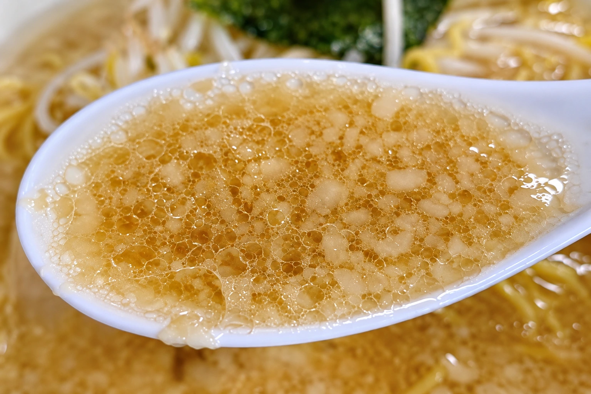
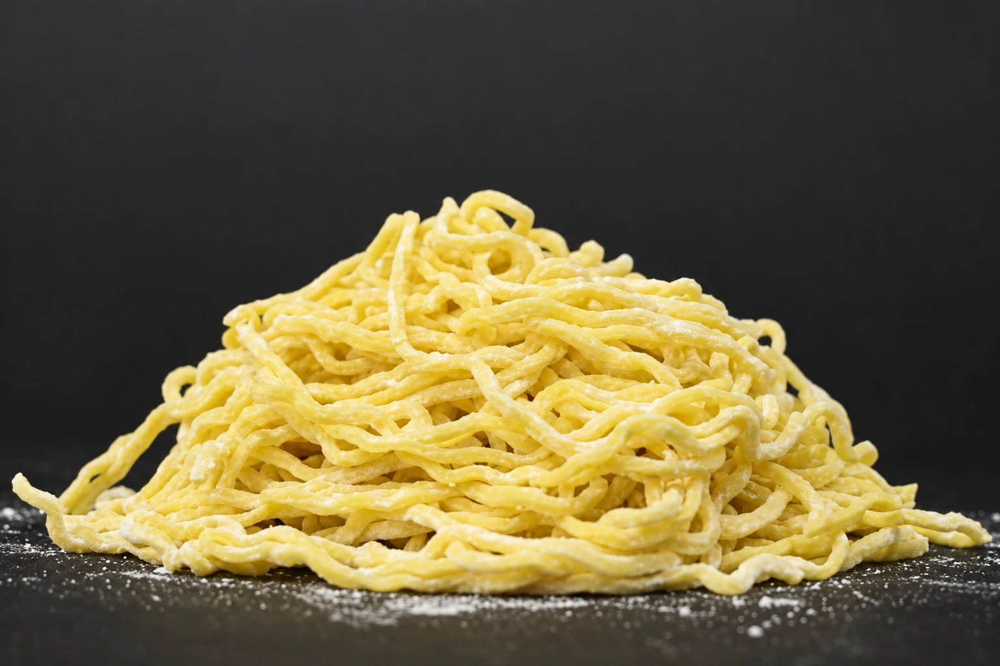

01 / SOUP
背脂の甘み。
醤油のキレ。
背脂が浮かぶ、豚骨醤油スープ。
コクのある見た目からは意外なほど、後味はすっきり。ほんのりとした背脂の甘さに、醤油のキレが重なります。濃厚さと軽やかさ、そのバランスを楽しんでください。
01 / OUR STORY
一杯をつくる三つの味と、30周年からはじまった新しい物語。

所沢で親しまれてきた、昔ながらの中華そば。
背脂のスープ、黄色い玉子麺、
手作りの煮豚チャーシュー。
気取らず、まっすぐに。
まるいちらしい旨さを、一杯に込めて。

01 / SOUP
コクのある見た目からは意外なほど、後味はすっきり。ほんのりとした背脂の甘さに、醤油のキレが重なります。濃厚さと軽やかさ、そのバランスを楽しんでください。

02 / NOODLES
スープをよく持ち上げる、昔ながらの黄色い麺。ちぢれのある麺が生む心地よい喉ごしと、ひと口ごとに広がる旨み。麺を硬めに仕上げたい方は、ご注文時にお声がけください。

03 / CHASHU
時間をかけて煮込んだお肉は、やわらかく、旨み豊か。しっかりとした味わいが、スープと麺を引き立てます。ラーメンの上でも、おつまみとしても、まるいちに欠かせない味です。
2025.11.12 / A NEW CHAPTER
「ここの味で、油そばを
作ってもらえませんか？」
ある日届いたのは、名前のない、手書きのハガキ。
その一言が、胸に残りました。
実は、同じ声をいただくのは三人目。
「この店の味で食べたい」
その想いに応えたくて、動きました。
30年守ってきた味を軸に、新しい挑戦としての一杯。
まるいち特製油そば。
2025年11月12日、30周年を記念して提供を始めました。
この店らしい旨さを、感じてもらえたらうれしいです。
まるいちは、これからも進化していきます。
SEE YOU AT MARUICHI